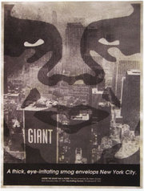

Helen Stickler
From The Giant: The Definitive Obey Giant Site
{kind=link}
Helen Stickler - Director. '91 RISD Graduate, FAV (Film - Animation - Video)
[edit] Films
[edit] About working with Shepard
From Supply and Demand, pg. 35:
I first noticed Shep's original black-and-white sticker on a light box at RISD in Providence, Rhode Island, in 1989. I remember cynically thinking that the use of the word "posse" was another attempt by the suburban bourgeois to mimic hip-hop culture, because there weren't too many kids from the 'hood at that school. But because the sticker was absurdly idolizing a professional wrestler, the clash of cultures and adoption of trends was one of the points it made.
Later, I saw Shep's giant Andre face over the mayor's election campaign billboard, and was impressed - the scale was significant, and alignment with a political gesture was subtle social commentary.
In 1994, I finished debuting my short Queen Mercy and wanted to follow it up. At the same time, Shep was plastering Providence with a parody of Coca-Cola's ad campaign for a new product called OK Soda (a test product now off the market).
Shep's wheat-pasted poster campaign had spread off campus, a bold move for most art students at that time. At one intersection Shep placed an OK poster on a light box, and as I sat at the red light looking straight at it, my eye traveled the short distance to the original Coca-Cola OK billboard high in the sky. The commentary was direct and inescapable, creating a heightened awareness of the environment we take for granted every day - the white noise of commercial advertising.
A few weeks later, I went to Shepard's studio in Olneyville, introduced myself, told him I wanted to make a documentary about him, and we shot the first scenes that night on a trip to Boston to post OK parodies on the subways.
The doc was completed in about three months, and debuted to great success in March 1995 at the New York Underground Film Festival (at that time run by its founder, director Todd Phillips). At the time, not many people knew who Shepard was, but many had seen the campaign or would start to notice it after watching the film.
I spent the next two years relentlessly searching out every underground venue, film festival, micro-cinema, museum, college, bar, gallery, punk-rock tour, and art-house theater across the country that would screen it. I made dubs in my living room and lived at Kinko's and the post office. Eventually I managed to get the doc in the Sundance Film Festival in 1997, where it took off to a new level. Andre the Giant Has a Posse has continued to screen for over 10 years now. It was described in 2003 by Village Voice critic Ed Halter as "legendary... a canonical study of Gen-X media manipulation. One of the keenest examinations of '90s underground culture."
In many ways, the short influenced my first feature documentary Stoked: The Rise and Fall of Gator, which was also about an urban legend among underground skateboard culture but of an entirely different sort. l was very happy that Shepard was able to do the graphic design for the poster for that film.
[edit] Join the Posse by Helen Stickler
From Sundance Channel:
Remember the 80's? Graffiti was king and the art world was hopping, with street artists like SAMO and Keith Haring making the gallery scene. Well, it's happening again, but the graffiti lords of the 90's are media and market savvy, and the commercial climate for art has drastically changed. Instead of raking in high-dollar commissions through museums and galleries, today's new school graffiti fools are more likely to skip the fine art and go straight for the licensing, slapping their designs on skateboards, t-shirts, tote bags and cheap posters that they wheat paste on the street.
A while ago I made a fast and dirty, low budget documentary about graphic artist Shepard Fairey, a skateboard-riding tagger responsible for the International Experiment in Phenomenology known as the "Andre the Giant has a Posse" sticker campaign. The campaign started with a face. And the face became an icon. And the people looked upon this icon and, finding it satisfyingly cryptic, they decided it was good. So Andre the Giant went from pro wrestler to subculture to company -- to culture at large.
Sadly for sports fans, the Andre Posse has little to do with pro wrestling. It's more about one artist's single-minded obsession with an image, and the evolution of that image into a full-blown cultural virus. From the birth of the sticker in Providence, RI circa 1990, there are now more than 600,000 replicas of the graphic around the world. The sticker first came to be when Shepard Fairey and a few of his skate friends ran across pro wrestler Andre the Giant's face in a newspaper ad, and made a spray paint stencil from the picture. The result, they decided, was hilarious. In an act of rebellion against corporate logo worship, Shepard and Co. decided to use the image to parody other skaters who rode in gangs, or "posses," and adopted -- often unthinkingly -- corporate logos to accessorize their boards. And so the Andre the Giant Posse was born.
My background in visual art and experimental film, and the whole concept of appropriation influenced my decision to make a documentary about Shepard and the Andre Phenomenon. Aware of the sticker since its inception, I've been witness to its metamorphosis. Since their initial prank, Shepard and legions of Giant enthusiasts have bootlegged, copied, altered the design, and taken the Andre campaign to the higher ground of media saturation. There have been songs, CD's using the Andre image as cover art, articles in newspapers and magazines, posters in museums, and graffiti campaigns. Early Andre stunts included a 1991 installation of a giant Giant face over the smiling features of Mayoral Candidate Vincent A. "Buddy" Cianci, Jr. on a prominent Providence billboard. Similar actions evolved into a "culture jamming" technique of inserting the Giant's face into logos, advertising, and throughout the urban environment to make a humorous statement.
The Art world, notoriously cyclic (and incestuous) by nature, has picked up on what modern graffiti artists are doing, and you can now find the street campaigns, CD covers, rock band promotions and sticker art of many a fine young tagger popping up in the pristine environs of museums and galleries. (I've heard stories of curators literally soaking wheat pasted posters off of the sides of buildings and peeling stickers from lamp posts to add to their collections). On a more mainstream scale, the recent commercial release of the film BASQUIAT and the publication of Keith Haring's journals are proof that the 80's paint masters are still marketable.
If the aim of advertising is to make a product into a familiar image, and the aim of appropriation is to take a familiar image out of context, the purpose of the Andre sticker is to take the context out of a familiar image. Repetition of the graphic mimics the techniques of advertising, and by drawing attention to this somewhat ridiculous and thoroughly inexplicable icon, people are forced to wonder. Ultimately, they assign their own meaning to the Andre image, and in effect, join the Posse.
Audiences seem to appreciate the documentary as a means to explain the enigmatic sticker, or at least reveal its source. Since its debut, ANDRE THE GIANT HAS A POSSE has been invited to screen in museums, artists' panels, independent art-houses, colleges, and festivals in the U.S. and Europe. As the documentary and news of the campaign spreads, articles about the "Andre Phenomenon" continue to appear in national media such as Wired Magazine. In some unhappy instances, writers have viewed my tape, deemed it newsworthy, and rewritten the story without any mention of the documentary as their source. Frustrating for the independent documentarian, yes, but when you consider that the Andre Phenomenon is all about appropriation, it seems, well...appropriate.
The documentary, like the Andre Sticker, is a work-in-progress, and I continue to shoot footage of Shep, his art and the posse. Devoid of agents (Gen-X Mary Boone, where are you?), and faced with finding a way to support their art-making habits, many young graffiti artists find the self-commercialization of their work a natural corollary. Artists such as Shepard Fairey (Giant), Mike Mills (X Girl), Eric Brunetti (Fuct), and Stash (Subware) show an entrepreneurial initiative that can only come from combining life in the advanced stages of capitalism with the desire to express an individual spirit. What comes around goes around, and as museum curators fawn over stickers and juvenile delinquents become CEO's, the Phenomenon continues...
Shepard has done a few works tied to Helen Stickler: the promotional poster for her 1997 documentary Andre the Giant Has a Posse, the video packaging for Andre the Giant Has a Posse, and the promotional material for her 2002 movie Stoked: The Rise and Fall of Gator, including the 2003 print Stoked.
|  |
{kind=link}
{kind=link}
{kind=link}